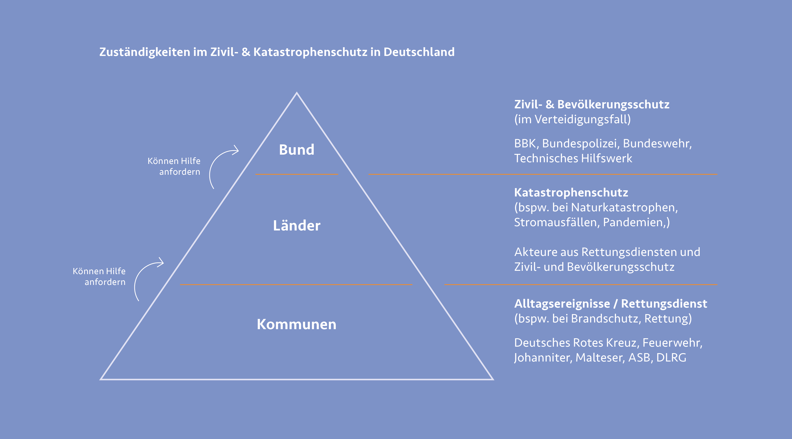
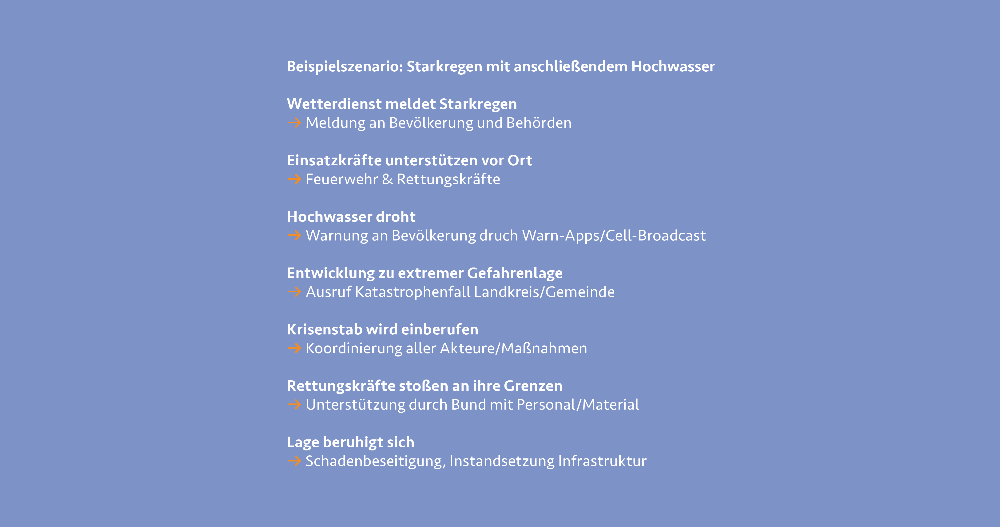

Der Bevölkerungsschutz und die Gewährleistung der Sicherheit für Bürgerinnen und Bürger ist eine der Kernaufgaben des Staates. Notsituationen entstehen meist plötzlich und unerwartet und stellen Bürger:innen oft vor immense Herausforderungen oder gar in Gefahrensituationen. Notlagen können etwa bei Naturkatastrophen wie Waldbränden oder Fluten, durch Seuchen, bei terroristischen Anschlägen und Kriegen oder den Auswirkungen von Pandemien auftreten. Sichere Verhältnisse zu schaffen, ist in solchen Situationen die höchste Priorität. Hier greift der Bevölkerungsschutz. Er ist Aufgabe von Bund, Ländern und Kommunen, welche jeweils für unterschiedliche Aufgabenfelder innerhalb des Bevölkerungsschutzes verantwortlich sind. Die einzelnen Verwaltungen sind eng miteinander abgestimmt, um im Ernstfall eine bestmögliche Kommunikation und Bereitstellung von Mitteln jeglicher Art zu ermöglichen. 1
Krisenmanagement
Um außergewöhnliche Gefahren- oder Schadenlagen abzuwenden, werden vom Bund Maßnahmen und Vorkehrungen erarbeitet und geplant. Diesen systematischen Umgang mit Notsituationen bezeichnet man als Krisenmanagement. Durch eine detaillierte Planung kann in Krisensituationen eine flüssige und effektive Schadenbekämpfung und Hilfe für Betroffene gewährleistet werden. Das Krisenmanagement umfasst eine breite Zusammenarbeit von Partner:innen und Kommunikationswegen innerhalb Deutschlands, aber auch im Ausland. Das System wird kontinuierlich verbessert und angepasst.
Unterscheidung zwischen Zivil- und Katastrophenschutz
Kann sich die Bevölkerung nicht selbst helfen und es besteht die Gefahr für Bürgerinnen und Bürger, greift der Zivil- und Katastrophenschutz. Durch das Zivil- und Katastrophenschutzgesetz (ZSKG) sind die Zuständigkeiten für Bund und Länder klar definiert. Der Bund hat seine Zuständigkeit im Zivilschutz und schützt die Bevölkerung vor kriegsbedingten Gefahren. Der Katastrophenschutz fällt hingegen in die Zuständigkeit der Länder und sorgt für Schutz vor Unglücken in Friedenszeiten. Der Katastrophenschutz ist Teil der allgemeinen Gefahrenabwehr und unterliegt laut Artikel 70 GG den Ländern. Ansprechpartner: innen für Bürger:innen sind Städte, Gemeinden, freie Landkreise und Kommunen. Bei der Bewältigung von lokalen Problemen sind Feuerwehren, Polizei und Ordnungsbehörden beteiligt. Zusätzlich stehen freie Rettungsdienste wie etwa der Arbeiter-Samariter-Bund (ASB), die Deutsche Lebens-Rettungs- Gesellschaft e.V. (DLRG), das Deutsche Rote Kreuz (DRK), die Johanniter und die Malteser zur Verfügung. Sollten Länder Polizeikräfte aus anderen Bundesländern oder Hilfskräfte aus der Verwaltung, wie etwa dem THW zur Unterstützung benötigen, können sie diese mit Hilfe des Artikel 33 GG anfordern. Auch Streitkräfte können so angefordert werden.
Der Zivilschutz fällt in die Zuständigkeit des Bundes, festgehalten im Artikel 73 Nr. 1 GG. Der Bund steht mit den einzelnen Ländern in engem Austausch und kann auf Einheiten und Einsatzkräfte der allgemeinen Gefahrenabwehr zugreifen. Die Kernaufgaben des Zivilschutzes ist es, wichtige Ziele mit nichtmilitärischen Maßnahmen vor kriegerischer Zerstörung zu bewahren und die Auswirkungen von Kriegsschäden möglichst gering zu halten und zu beseitigen. Wichtige Ziele, die es zu schützen gilt, sind unter anderem die Bevölkerung, Wohnungs- und Arbeitsräume, versorgungs- verteidigungswichtige Anlaufstellen, Betriebe und Einrichtungen und der Schutz von Kulturgut. In einem etwaigen Kriegsfall versorgt der Bund Einsatzkräfte mit entsprechender Technik, Ressourcen, Ausbildung und den nötigen Geldern. Der Bund hat im Katastrophenschutz keine Zuständigkeit. Sollten Länder im Notfall allerdings Hilfe für den Katastrophenschutz anfordern, kann der Bund Mittel und Ressourcen aus dem Zivilschutz bereitstellen und direkt an die Länder ausliefern. 2
 3
Bund, Länder und Hilfsorganisationen arbeiten in engem Austausch miteinander, um den bestmöglichen Schutz der Bevölkerung zu gewährleisten. Sollten bei lokalen Ereignissen auf Länderebene weitere Ressourcen oder Gelder für den Zivilschutz benötigt werden, können die Länder auf Mittel des Zivilschutzes des Bundes zurückgreifen. Im Gegenzug stellen Hilfsorganisationen, welche für die Länder tätig sind, dem Bund im Verteidigungsfall Kräfte und Fähigkeiten zur Verfügung. Um die diversen Aktivitäten und Prozesse bestmöglich zu planen und die unterschiedlichen Verwaltungsebenen zu koordinieren, dient das sogenannte „integrierte Hilfeleistungssystem“. Es arbeitet zudem mit Feuerwehren, Hilfsorganisationen und dem Technischen Hilfswerk zusammen, damit Helfende und Material schnellstmöglich den Bürgerinnen und Bürgern vor Ort zur Verfügung stehen können. 4
Um die Zusammenarbeit der unterschiedlichen Akteure im Bevölkerungsschutz zu verbessern und zu aktualisieren, wurde die LÜKEX (Länder- und Ressortübergreifende Krisenmanagementübung (Exercise)) ins Leben gerufen. Diese Krisenübungen finden in Deutschland seit 2004 in kontinuierlichen Intervallen statt. Sie soll das gemeinsame Krisenmanagement von Bund, Ländern, Hilfsorganisationen und den Betreibenden kritischer Infrastrukturen (KRITIS) strategisch verbessern. Durch gemeinsame Übungen an realitätsnahen Krisensimulationen, kann die Zusammenarbeit der einzelnen Akteure und spezifischen Abläufe in krisennahen Situationen genau geprobt und verbessert werden. Somit können Entscheidungen im Ernstfall schneller und im Sinne der Bevölkerung umgesetzt werden. 5

-
Vgl. Bundesministerium des Innern und für Heimat: Bevölkerungsschutz, 2024, https:// www.bmi.bund.de/DE/themen/bevoelkerungsschutz/bevoelkerungsschutz-node.html ↩︎
-
Vgl. Bundesministerium des Innern und für Heimat: Zivil- und Katastrophenschutz, 2024, Quelle https://www.bmi.bund.de/DE/themen/bevoelkerungsschutz/zivil-und-katastrophenschutz/ zivil-und-katastrophenschutz-node.html ↩︎
-
Abb.: Zuständigkeiten im Bevölkerungsschutz https://link.springer.com/chapter/10.1007/978-3-662-44635-5_4 ↩︎
-
Vgl. Bundesministerium des Innern und für Heimat: Zivil- und Katastrophenschutz, 2024, Quelle https://www.bmi.bund.de/DE/themen/bevoelkerungsschutz/zivil-und-katastrophenschutz/ zivil-und-katastrophenschutz-node.html ↩︎
-
Vgl. Bundesamt für Bevölkerungsschutz und Katastrophenhilfe: Krisenübung für den Bevölkerungsschutz, 2024, https://www.bbk.bund.de/DE/Themen/Krisenmanagement/ LUEKEX/luekex_node.html ↩︎